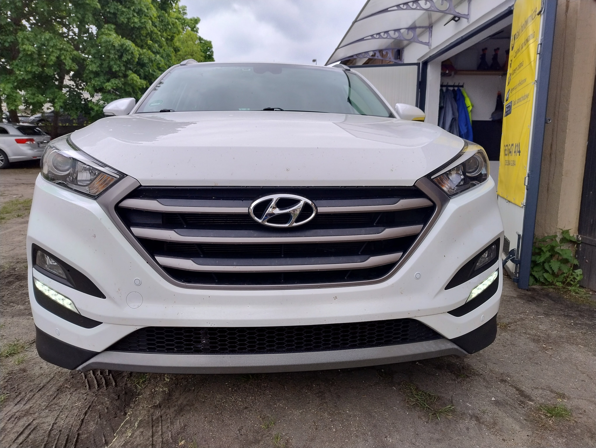
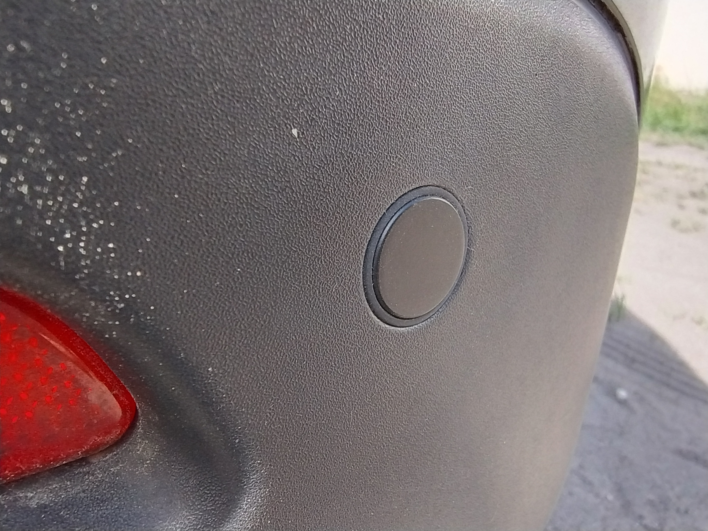
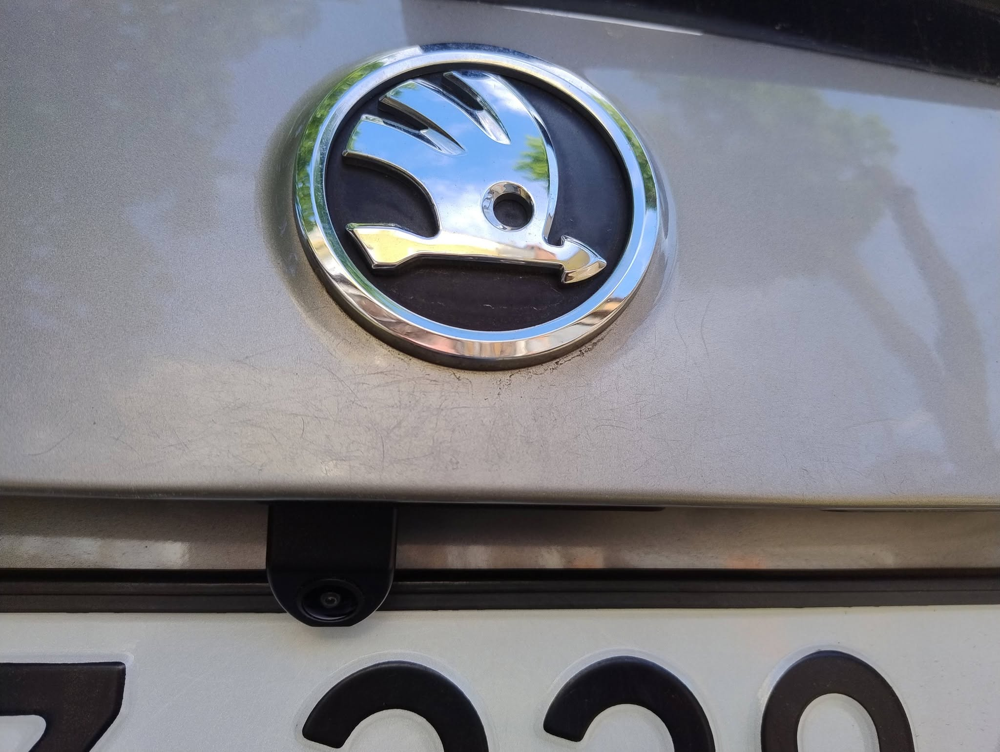

Haki holownicze • Czujniki parkowania • Kamery cofania • Radia samochodowe • Regeneracja reflektorów • Kodowanie wiązek haków holowniczych • Wideorejestratory • Retrofit
Zobacz ofertęAuto-System Retrofit to lokalny warsztat specjalizujący się w montażu oraz doposażaniu samochodów w nowoczesne systemy elektroniczne.
Wykonujemy montaż haków holowniczych, wiązek elektrycznych, czujników parkowania, kamer cofania, wideorejestratorów oraz systemów multimedialnych.
Każde zlecenie realizujemy indywidualnie, dbając o estetykę wykonania, bezpieczeństwo oraz zgodność z elektroniką pojazdu i specyfiką marki.
Dokładny montaż zgodny z fabrycznymi standardami.
Pracujemy na sprawdzonych i aktualnych rozwiązaniach.
Instalacje bezpieczne i w pełni przetestowane.
Szybki czas realizacji zleceń.
Najbardziej atrakcyjne ceny usług.
Oferujemy profesjonalny montaż dedykowanych haków holowniczych – odkręcanych, wypinanych poziomo, pionowo oraz ukośnie. Instalujemy uniwersalne i dedykowane wiązki elektryczne 7- oraz 13-pin.
Istnieje możliwość montażu rozbudowanej wiązki do przyczep kempingowych, umożliwiającej ładowanie akumulatora przyczepy podczas pracy silnika oraz zasilanie oświetlenia wewnętrznego i innych urządzeń elektrycznych podczas postoju.
Montujemy haki holownicze renomowanych producentów: Auto-Hak, Steinhof oraz Brink, gwarantując solidny montaż, estetykę wykonania oraz bezpieczne użytkowanie.
Wiązki elektryczne 7 PIN i 13 PIN, uniwersalne z modułem cyfrowym – podpinane pod przewody lamp tylnych pojazdu lub magistrali CAN.
Oferujemy również wiązki dedykowane firmy Hak - System, produkowane w Szwajcarii– wpinane bezpośrednio pod złącza fabryczne instalacji elektrycznej pojazdu, co zapewnia pełną kompatybilność i bezpieczeństwo działania.
Montaż czujników parkowania przód i tył. Cała instalacja jest bezpiecznie i estetycznie podłączona do instalacji elektrycznej pojazdu oraz ukryta pod tapicerką.
Oferujemy montaż systemów z wyświetlaczem lub bez, z możliwością lakierowania czujników pod kolor pojazdu lub w wersji standardowej - czarny mat.
Pracujemy na sprawdzonych systemach renomowanych marek: Valeo oraz Steelmate.
Montaż dedykowanych kamer cofania w miejscu podświetlenia tablicy rejestracyjnej lub przycisku otwarcia klapy bagażnika – bez konieczności wiercenia.
Oferujemy instalację z uniwersalnym 5-calowym wyświetlaczem lub podłączenie kamery do niefabrycznego radia z obrazem w jakości AHD. Montujemy ponadto 2 filtry: na zasilaniu i obrazie, dzięki którym ryzyko występowania zakłóceń na wyświetlanym obrazie jest redukowane do minimum.
Kodowanie i programowanie wykonujemy przy użyciu specjalistycznego oprogramowania diagnostycznego, dostosowując instalację elektryczną do fabrycznych systemów pojazdu. W zalezności od wyposażenia auta, po zakodowaniu następuje: automatyzacja wyłącznia czujników parkowania, wizualizacja podpięcia przyczepy w fabrycznym systemie multimedialnym, kontrola stanu oświetlenia przyczepy na zegarach, stabilizacja toru jazdy przyczepy, dostosowanie: silnika, skrzyni biegów, asystenta toru jazdy, radarów odległościowych oraz tempomatu do jazdy z przyczepą.
Montaż akcesoryjnych radioodtwarzaczy samochodowych 1 DIN oraz 2 DIN, dopasowanych do wnętrza pojazdu, z możliwością obsługi CarPlay oraz Android Auto.
Zapewniamy prawidłowe podłączenie, estetyczne wykończenie oraz integrację z instalacją elektryczną auta.
Montaż wideorejestratorów przód + tył, w jakości obrazu kamery przedniej 4K lub QHD oraz kamery tylnej w jakości Full HD, zapewniających wysoką jakość nagrań, zarówno w dzień, jak i w nocy. Ponadto istnieje możliwość rozbudowy o moduł 4G, pozwalający na podgląd rzeczywistego obrazu z wideorejestratora w dowolnym miejscu na świecie, przy użyciu transmisji danych na urządzeniu mobilnym.
Urządzenia posiadają funkcję nagrywania w trybie parkingowym, z zabezpieczeniem akumulatora przed rozładowaniem.
Profesjonalna regeneracja kloszy reflektorów samochodowych wraz z ich polerowaniem i przywróceniem pierwotnej przejrzystości.
Po regeneracji powierzchnia reflektora jest zabezpieczana specjalnym lakierem bezbarwnym z dodatkiem podkładu oraz utwardzacza, co chroni ją przed działaniem warunków atmosferycznych i ponownym matowieniem.
Warunkiem wykonania regeneracji jest brak wyraźnych pęknięć oraz szczelność reflektora.
Zobacz wybrane montaże wykonane przez Auto-System Retrofit.








Pracujemy z większością producentów samochodowych
W 100% polecam! Pomoc w doborze haka i szybki montaż.
— KasiaBardzo wysoka jakość wykonania. Jak ASO, ale taniej.
— ArturŚwietna robota i pełen profesjonalizm.
— KamilPerfekcyjny montaż radia i świetna komunikacja.
— BeataCzujniki i kamera działają idealnie.
— KonradProfesjonalnie, szybko i uczciwie.
— NadiaHenryka Sienkiewicza, 65-443 Zielona Góra
To jest test.